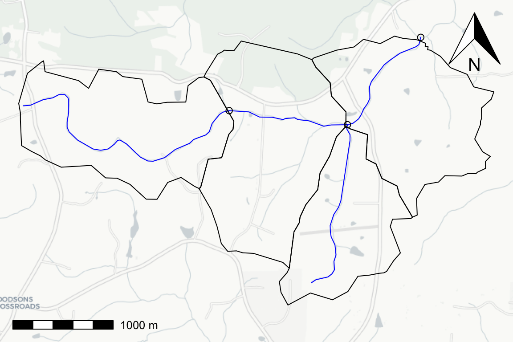

The following example shows how to work with data following the NHDPlusV2 schema.
# https://github.com/usgs-r/nhdplusTools
library(nhdplusTools)
#> USGS Support Package: https://owi.usgs.gov/R/packages.html#support
# https://github.com/tidyverse/dplyr
library(dplyr)
#>
#> Attaching package: 'dplyr'
#> The following objects are masked from 'package:stats':
#>
#> filter, lag
#> The following objects are masked from 'package:base':
#>
#> intersect, setdiff, setequal, union
# https://github.com/r-spatial/sf
library(sf)
#> Linking to GEOS 3.8.1, GDAL 3.0.4, PROJ 7.0.0
library(hygeo)
sample_data <- system.file("gpkg/nhdplus_subset.gpkg", package = "hygeo")
plot_nhdplus(outlets = list(8895396),
nhdplus_data = sample_data,
overwrite = FALSE,
plot_config = list(basin = list(border = NA),
outlets = list(default = list(col = NA))),
cachedir = tempdir(check = TRUE))
#> Zoom: 14
#> Map tiles by Carto, under CC BY 3.0. Data by OpenStreetMap, under ODbL.
#> Audotdetect projection: assuming Google Mercator (epsg 3857)
fline <- read_sf(sample_data, "NHDFlowline_Network") %>%
align_nhdplus_names() %>%
filter(COMID %in% get_UT(., 8895396))
catchment <- read_sf(sample_data, "CatchmentSP") %>%
align_nhdplus_names() %>%
filter(FEATUREID %in% fline$COMID)
nexus <- get_nexus(fline)
plot(st_transform(st_geometry(catchment), 3857), add = TRUE)
plot(st_transform(st_geometry(nexus), 3857), add = TRUE)
Given the flowlines, catchments, and nexuses, we can generate topology edge lists and data representations. The nexuses are outlet points along flowlines in this case. Waterbodies are 1:1 with catchments in this example but the data model will support 1:n or n:1 waterbody:catchment relationships.
(catchment_edge_list <- get_catchment_edges(fline))
#> # A tibble: 7 x 2
#> ID toID
#> * <chr> <chr>
#> 1 catchment_8895442 nexus_250031932
#> 2 catchment_8895520 nexus_250031930
#> 3 catchment_8895396 nexus_250031903
#> 4 catchment_8895402 nexus_250031930
#> 5 nexus_250031932 catchment_8895402
#> 6 nexus_250031930 catchment_8895396
#> 7 nexus_250031903 catchment_0
(waterbody_edge_list <- get_waterbody_edge_list(catchment_edge_list))
#> # A tibble: 7 x 2
#> ID toID
#> * <chr> <chr>
#> 1 waterbody_8895442 nexus_250031932
#> 2 waterbody_8895520 nexus_250031930
#> 3 waterbody_8895396 nexus_250031903
#> 4 waterbody_8895402 nexus_250031930
#> 5 nexus_250031932 waterbody_8895402
#> 6 nexus_250031930 waterbody_8895396
#> 7 nexus_250031903 waterbody_0
(catchment_data <- get_catchment_data(catchment, catchment_edge_list))
#> Simple feature collection with 4 features and 3 fields
#> geometry type: MULTIPOLYGON
#> dimension: XY
#> bbox: xmin: -79.16293 ymin: 35.97214 xmax: -79.11032 ymax: 35.99623
#> geographic CRS: WGS 84
#> # A tibble: 4 x 4
#> ID area_sqkm geom toID
#> * <chr> <dbl> <MULTIPOLYGON [°]> <chr>
#> 1 catchment… 1.86 (((-79.15822 35.98449, -79.15997 35.98514, -79… nexus_25…
#> 2 catchment… 1.28 (((-79.13297 35.97544, -79.13245 35.9787, -79.… nexus_25…
#> 3 catchment… 2.12 (((-79.13297 35.97544, -79.13369 35.97596, -79… nexus_25…
#> 4 catchment… 1.77 (((-79.11932 35.98001, -79.12077 35.98198, -79… nexus_25…
(waterbody_data <- get_waterbody_data(fline, waterbody_edge_list))
#> Simple feature collection with 4 features and 5 fields
#> geometry type: MULTILINESTRING
#> dimension: XYZ
#> bbox: xmin: -79.16244 ymin: 35.97413 xmax: -79.11841 ymax: 35.99613
#> z_range: zmin: 0 zmax: 0
#> geographic CRS: WGS 84
#> # A tibble: 4 x 6
#> ID length_km slope_percent main_id geom toID
#> * <chr> <dbl> <dbl> <dbl> <MULTILINESTRING [°]> <chr>
#> 1 waterb… 2.78 0.0163 2.50e8 Z ((-79.16244 35.98999 0, -79.… nexus…
#> 2 waterb… 1.78 0.00903 2.50e8 Z ((-79.13053 35.97413 0, -79.… nexus…
#> 3 waterb… 1.22 0.00424 2.50e8 Z ((-79.12653 35.9883 0, -79.1… nexus…
#> 4 waterb… 1.20 0.00652 2.50e8 Z ((-79.13963 35.98956 0, -79.… nexus…
(nexus_data <- get_nexus_data(nexus, catchment_edge_list, waterbody_edge_list))
#> Simple feature collection with 8 features and 2 fields
#> geometry type: POINT
#> dimension: XY
#> bbox: xmin: -79.13963 ymin: 35.9883 xmax: -79.11841 ymax: 35.99613
#> geographic CRS: WGS 84
#> # A tibble: 8 x 3
#> ID geometry toID
#> * <chr> <POINT [°]> <chr>
#> 1 nexus_250031932 (-79.13963 35.98956) catchment_8895402
#> 2 nexus_250031932 (-79.13963 35.98956) waterbody_8895402
#> 3 nexus_250031930 (-79.12653 35.9883) catchment_8895396
#> 4 nexus_250031930 (-79.12653 35.9883) waterbody_8895396
#> 5 nexus_250031903 (-79.11841 35.99613) catchment_0
#> 6 nexus_250031903 (-79.11841 35.99613) waterbody_0
#> 7 nexus_250031930 (-79.12653 35.9883) catchment_8895396
#> 8 nexus_250031930 (-79.12653 35.9883) waterbody_8895396The outputs can be rendered into csv or json:
write.csv(catchment_edge_list, "catchment_edge_list.csv",
row.names = FALSE)
jsonlite::write_json(catchment_edge_list, "catchment_edge_list.json",
pretty = TRUE)
write.csv(waterbody_edge_list, "waterbody_edge_list.csv", row.names = FALSE)
jsonlite::write_json(waterbody_edge_list, "waterbody_edge_list.json",
pretty = TRUE)
write_sf(catchment_data, "catchment_data.geojson")
write_sf(waterbody_data, "waterbody_data.geojson")
write_sf(nexus_data, "nexus_data.geojson")